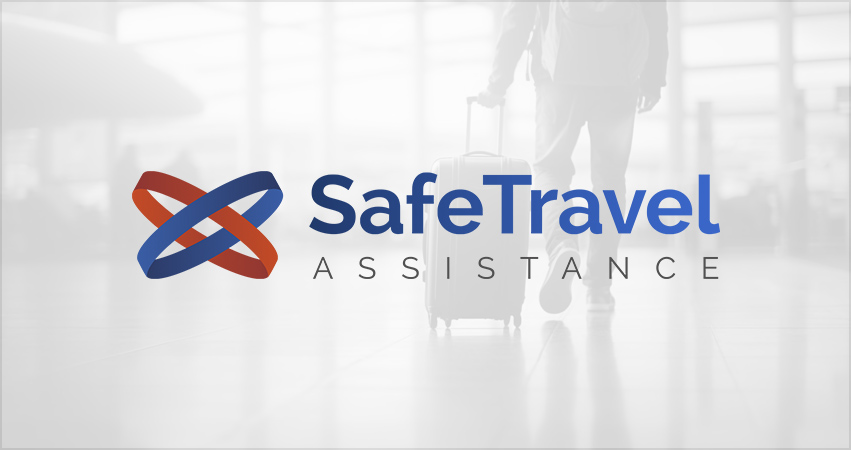
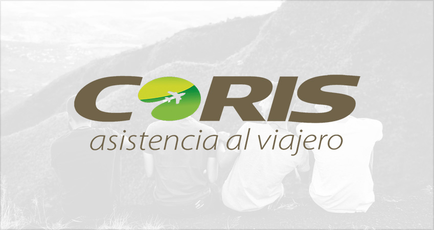
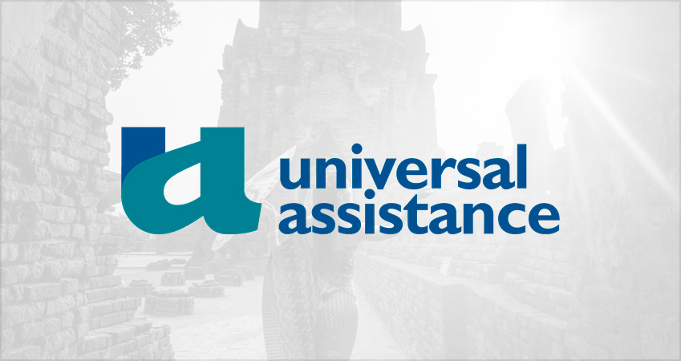

Viaja con Seguridad: ¡Asegura tu Aventura con Asistencia al Viajero!
En CodoViajes, nos enorgullece ofrecerte una experiencia de viaje excepcional. Sin
embargo, reconocemos que
la seguridad es un aspecto crucial de cualquier aventura. Te alentamos a que priorices tu seguridad y
tranquilidad al
considerar la contratación de una asistencia al viajero para tu próximo viaje. ¡Viaja con confianza y
disfruta al máximo
de cada momento!
HOT SALE - 13, 14 Y 15 DE MAYO - 20% DE DESCUENTO EN PASAJES A MENDOZA, SAN JUAN Y
MISIONES | 40% OFF EN VIAJES AL SUR DEL PAÍS | HASTA 12 CUOTAS SIN INTERÉS CON TARJETAS VISA O
MASTERCARD | HOT SALE - 13, 14 Y 15 DE MAYO - 20% DE DESCUENTO EN PASAJES A MENDOZA, SAN JUAN Y
MISIONES | 40% OFF EN VIAJES AL SUR DEL PAÍS | HASTA 12 CUOTAS SIN INTERÉS CON TARJETAS VISA O
MASTERCARD |



¿Qué es la asistencia al viajero?
La asistencia al viajero es un conjunto de servicios diseñados para proporcionar
apoyo y protección durante tus viajes.
Ya sea que estés explorando un nuevo destino o simplemente necesites tranquilidad mientras estás lejos
de casa, el
servicios de asistencia estara para ayudarte en cualquier momento y en cualquier lugar.
Servicios de Asistencia al Viajero
- Asistencia en Viaje: Cuenta con una red global de profesionales médicos y centros de atención para
brindarte
atención médica de calidad en caso de enfermedad o lesión durante tu viaje.
- Enfoque en tu Bienestar: Nosotros nos ocupamos de los detalles del viaje, pero tu bienestar es
nuestra máxima prioridad.
Contratar una asistencia al viajero te brinda la tranquilidad de saber que estarás protegido en caso
de cualquier
eventualidad, permitiéndote disfrutar al máximo de tu aventura.
- Preparación para lo Inesperado: Aunque planeamos meticulosamente cada aspecto de tu viaje, siempre
pueden surgir
imprevistos. Una asistencia al viajero te proporciona la preparación necesaria para enfrentar
cualquier desafío que
pueda surgir, desde problemas de salud hasta emergencias en el extranjero.
Cómo Obtener Asistencia al Viajero
Existen numerosas compañías especializadas en asistencia al viajero que ofrecen
una variedad de planes adaptados a tus
necesidades específicas. Te recomendamos investigar y comparar diferentes opciones para encontrar la
cobertura adecuada
para tu próximo viaje. Al asegurarte de tener una asistencia al viajero confiable, estás tomando medidas
proactivas para
proteger tu seguridad y bienestar mientras exploras el mundo.